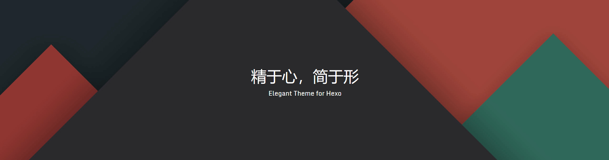
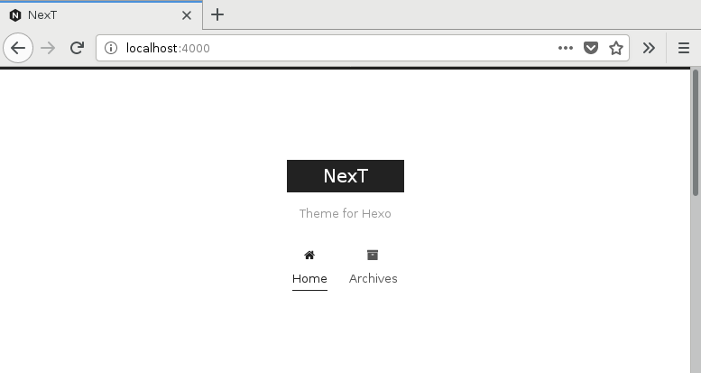

Hexo搭建个人博客（二）：主题配置
什么是 NexT ？
Next 是专门为 Hexo 而定制的一款主题。它简单、清新、优雅，一个主题，三种外观，而且还支持多种语言，选您所好。

配置文件说明
在 Hexo 中有两份主要的配置文件，其名称都是 _config.yml。 其中，一份位于站点根目录下，主要包含 Hexo 本身的配置；另一份位于主题目录下，这份配置由主题作者提供，主要用于配置主题相关的选项。
为了描述方便，在以下说明中，将前者称为 站点配置文件 ， 后者称 主题配置文件 。
安装 NexT 主题
Hexo 安装主题的方式非常简单，只需要将主题文件拷贝至 Hexo 站点根目录的 themes 目录下， 然后修改下配置文件即可。具体到 NexT 来说，安装步骤如下。
下载主题
在 Hexo 站点根目录下执行以下命令下载主题文件。
1 | $ git clone https://github.com/iissnan/hexo-theme-next themes/next |
启用主题
与所有 Hexo 主题启用的模式一样。 当 克隆/下载 完成后，打开 Hexo 站点配置文件 _config.yml ， 找到 theme 字段，并将其值更改为 next。
1 | theme: next |
到此，NexT 主题安装完成。下一步我们将验证主题是否正确启用。在切换主题之后，验证之前， 我们最好使用 hexo clean 来清除 Hexo 的缓存。
验证主题
首先启动 Hexo 本地站点，并开启调试模式（即加上 –debug），整个命令是 hexo s --debug 。 在服务启动的过程，注意观察命令行输出是否有任何异常信息，如果你碰到问题，这些信息将帮助他人更好的定位错误。 当命令行输出中提示出。
1 | INFO Hexo is running at http://0.0.0.0:4000/. Press Ctrl+C to stop. |
此时即可使用浏览器访问 http://localhost:4000 ，检查站点是否正确运行。
当你看到站点的外观与下图所示类似时即说明你已成功安装 NexT 主题。这是 NexT 默认的 Scheme —— Muse

现在，你已经成功安装并启用了 NexT 主题。
主题设定
选择 Scheme
Scheme 是 NexT 提供的一种特性，借助于 Scheme，NexT 为你提供多种不同的外观。同时，几乎所有的配置都可以 在 Scheme 之间共用。目前 NexT 支持三种 Scheme，他们是：
- Muse - 默认 Scheme，这是 NexT 最初的版本，黑白主调，大量留白
- Mist - Muse 的紧凑版本，整洁有序的单栏外观
- Pisces - 双栏 Scheme，小家碧玉似的清新
- Gemini - 看起来像 Pisces ，但有明显的柱块与阴影，以显得更敏感的效果
Scheme 的切换通过更改 主题配置文件 _config.yml ，搜索 scheme 关键字。 你会看到有四行 scheme 的配置，将你需用启用的 scheme 前面注释 # 去除即可。
1 | #scheme: Muse |
设置基本信息
编辑 站点配置文件 _config.yml ， 设置基本信息。
1 | title: 张三的博客 # 站点名称 |
设置菜单信息
编辑 主题配置文件 _config.yml 。
菜单设置项的格式为 Key: /link/ || icon 。
- Key：菜单的名称(如：home、tags等)
- link：菜单的链接(如：tags、categories)
- icon：菜单的图标(如：tags、th等)，NexT 使用的是 Font Awesome 提供的图标
1 | menu: |
设置侧栏信息
编辑 主题配置文件 _config.yml 。
1 | sidebar: |
设置网站图标
编辑 主题配置文件 _config.yml 。
默认情况下，Hexo 使用 hexo-site/themes/ NexT /source/images/ 目录中的 NexT favicons，不同的设备使用不同大小的 NexT favicons ，你也可以用你自己的图标替换它们。
例如，您可以将您的 favicons 放在 hexo-site/source/images/ 目录中，然后，更改 主题配置文件 _config.yml 中 favicon 信息。
1 | favicon: |
设置头像
编辑 主题配置文件 _config.yml 。
将您的头像图片放在 themes\next\source\images\avatar.png 目录下。
1 | avatar: |


- 本文链接： http://pengzhenjin.top/2019/08/16/Hexo搭建个人博客（二）：主题配置/
- 版权声明： 本博客所有文章除特别声明外，均采用 BY-NC-SA 许可协议。转载请注明出处！